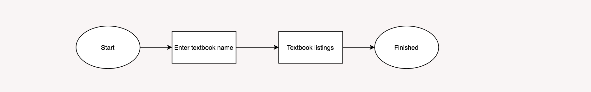

Case Study:
BookSmart

Summary
According to my research, a good number of students buy and sell textbooks to fellow classmates. The only means they can accomplish this, however, is through a disorganized Facebook group page. BookSmart connects users with other students so that they can buy or sell used textbooks directly.
>> See PrototypeThe Problem
Buying and selling on Facebook can be confusing as many listings get pushed down and lost within hours of posting. Students often have trouble finding the textbooks they need through the search bar and rather than sorting through hundreds of posts, they turn to Amazon or other retailers.
The Process
When I was in college, I often bought and sold my textbooks on the Facebook group page for my school. Students would post a photo with all of the books they are trying to sell and listed their titles in the description box. However, I often found my post pushed down within an hour of my listing to never be found again. A good number of posts would get tens of comments asking about different textbooks and sometimes it was unclear whether the textbook I commented about was still available. Overall, the process was a mess. Despite that, students continued to buy and sell on that page for the lowest prices and the convenience of being able to meet in person in a timely manner. I designed BookSmart with all of this in mind, and hope to target students in secondary education and beyond.
Competitve Analysis
I started with a competitive analysis of some of the competition out there. Specifically I studied Amazon, Chegg, and eBay. All three sites sold textbooks, some used and some new. Amazon and Chegg also offered a renting service, which according to my survey, some students opted to do in order to save money. These three sites are all popular with students but they don’t quite offer what BookSmart offers, which is buying directly from their classmates at the same school. This is a niche that no other website fills.
>> Read the Competitive Analysis HereSurvey
I created a survey in order to better understand students’ buying habits in regards to textbooks. I wanted to know if people nowadays rented textbooks more than buying them and whether they would prefer to buy textbooks but renting is just cheaper.
>> See Survey Analysis HereUser Personas
Following the survey, I reached out to a few participants with more in depth follow up questions. Using their responses along with the data I collected from the survey, I was able to craft three user personas.
Jennifer
Pursuing a B.S. in Computer Science
GOALS
Make the deans honor list, graduate magna cum laude, work as an intern over the summer
“Textbooks can cost more than half of what I pay for rent, so I have to cut costs where I can”
FRUSTRATIONS
Prefers to have physical copies of textbooks, but PDFs online are cheaper or free. Usually will rent over buy but feels that it is a waste of money
Joshua
Pursuing a B.A. in Pschology
GOALS
Spend more time studying, start budgeting money, find a career that is fulfilling
“I don’t know why textbooks costs so much money when we already pay so much for tuition.”
FRUSTRATIONS
Buys textbooks with the plan to resell them but sometimes his posts get pushed down on the Facebook page
User Stories
Keeping those user stories, survey data, and competitive analysis in mind, I wrote out the user stories for BookSmart.
| Role | Task | Rank |
|---|---|---|
| As a returning user | I want to look up my school page so that I can look at what my classmates are selling | High |
| As a returning user | I want to look up a specific course so that I can see if the textbook I need is available | High |
| As a returning user | I want to post a listing for my textbook so that someone can buy my used textbook | High |
| As a returning user | I want to look at various options for textbooks so that I can get the condition and price I want | High |
| As a returning user | I want to search the title of my textbook so that I can see what is available | High |
| As a returning user | I want to look up a subject so I can see if the textbook I need is available at another school | Medium |
| As a returning user | I want to compare prices so that I can ensure I am getting a good deal | Medium |
| As a returning user | I want to post pictures so that buyers can see the condition of my textbooks | Medium |
| As a returning user | I want to create an account so I can save all my information in one place | Medium |
| As a returning user | I want to specify the criteria of textbook I want so I can get the condition I want | Medium |
| As a returning user | I want to choose the location to meet the buyer/seller so I can get my textbook in time | Medium |
| As a returning user | I want to choose a payment option for my textbooks to ensure the deal goes through | Medium |
| As a returning user | I want to read details of the listing so that I can make sure I am buying the right textbook | Medium |
| As a returning user | I want to leave reviews for sellers so that I can ensure other buyers get proper information | Low |
| As a returning user | I want to read seller reviews so that I can make sure they are reliable | Low |
| As a returning user | I want to message the seller so that I can ask questions about the textbook | Low |
| As a returning user | I want to sort my search results so that I can look at textbooks by the criteria I want | Low |
| As a returning user | I want to look at pictures so that I can ensure I get the quality I want | Low |
| As a returning user | I want to look at recommended course material so I can pick up other textbooks I might need | Low |
| As a returning user | I want to favorite some sellers so I can come back to look at their listings | Low |
User Flow
Next up, I took these high priority tasks and made user flows for them. By doing this I was able to map out a general idea of what sort of functions BookSmart should have and what actions to prioritize.
Look up school page:
Look up course:
Post a listing:
Look through various postings:
Search textbook title:
Wireframes
I started by first sketching out my wireframes to get a few ideas out. I created a few different variations of screens that would accomplish all of the high priority tasks. I wanted to aim for a clear and concise website that would be easy to navigate for students. I studied a variety of online retail websites from Amazon to Mejuri to see what kind of layouts users may be familiar with. I then translated the sketches to Figma and created 5 detailed wireframes.
>> See All Wireframes HereBranding
At first, I had decided on naming my website “Textbook Match” to describe the goal of matching students in order to buy/sell textbooks. This title proved to be too long and so I changed it to BookSmart. BookSmart refers to phrase “book smart” which means someone who has academic intelligence. BookSmart also alludes to the fact that students are shopping “smartly” by using our website and buying from their classmates for a lower price. I went through a few iterations for the BookSmart logo. I started the process by brainstorming via mind webs and word associations for the word “textbook.” I then sketched out multiple different textbooks focusing on the idea of two users meeting. I initially wanted to use a logo featuring outlines of two people connected by a textbook. However, I realized that it would be a difficult logo to use in different circumstances. My mentor helped me look beyond my initial designs to see possibilities in tweaking the letters in the name to look like a book. I played around with different designs and colors and finally found the perfect combination for the logo:
I chose the Lora font for headlines and important text because the serifs give off a more trusted appeal. The second font, Roboto, is for body texts and other smaller headlines. Roboto is a modern looking text and provides a good contrast to the older looking Lora.
I chose colors that are traditionally used for university or academic sites such as blue and green. However, I picked colors that are brighter and give off a more fun and easy vibe.
>> See Full Brand Guide HereMockups
I knew that I wanted my website to look clean but also have a fun element to it. I wanted to use icons for the front page in order to briefly explain how everything works. It took me a long time to find appropriate icons that were also fun and consistent.
I looked back at a number of websites like Etsy and eBay to see how they emphasize certain actions. Specifically I debated for a long time on where to place the “sell” button. I questioned whether I wanted it to be an option on the main page or whether it should only be available after the school page. I played around with using a colored button to call attention to “sell” but ultimately decided against. If users wanted to sell a book they would look for the button to sell, therefore it doesn’t need to be a colored button that would be one of the first things a user sees.
For the search results page, I made a straightforward design that lists out all of the results. Each listing shows a textbook image, the textbook title, the class it is for, and the price. In the page to list an item, I created a form like layout where users can go down the page and fill out the necessary information. There is a short description for each section to explain the significance of providing that specific information. The details of the book include: authors, title, course name, course number, condition, subject, educational level, price, and photos. There is also a section for providing additional information. A big part of the BookSmart is that you can meet your buyer/seller directly in person and so I included a section for listing the locations that the seller is willing to meet up at. I had trouble here with how users can enter that information. I considered pill buttons, checkboxes, or just giving them one location option. In the end, I decided on giving them one general location and prompted users to communicate directly in order to pick out a specific location. The last page is the listing page for a specific textbook. This page shows all of the information that the seller gave. There is also a section for a question and answer. The purchase button is the biggest button so that it draws the attention of the user. There is a warning that is displayed under the buy button which informs users how much competition they may have in wanting to buy the textbook. The point of the warning is to help push the students along in buying the textbooks they need instead of having the textbook sitting idly in their cart. Underneath the textbook listing are a row of three books that are recommended to the buyer based upon what other users had looked at.
>> See Mockups hereUsability Testing
I made a prototype using Invision and tested three participants. I asked them to show me: 1. How to get to the page for their school, 2. How to search for a specific textbook they need, and 3. How to list a textbook for sale. The first two users accomplished task number one with no hiccups. The third user, however, got briefly distracted by the icons and thought they were buttons. All three users were able to accomplish the second task easily without any help. For the third task, two users suggested putting the book details above uploading photos because details were more important. User one expressed that the website looked somewhat plain whilst user two really liked the clean aesthetic and claimed it looked more “reputable.”
I changed the search bar so that it doesn’t stand out and distract as much as the original one on the left. If users want to search for an item, they will easily locate the search bar, but the search bar shouldn’t distract so much.
As shown above I also made the school logo smaller so that it doesn’t draw attention away from my site logo. I also added a line between the two logos for a more finished look.
Conclusion
I found that I had a relatively smooth time translating my wireframes into mockups because of the thought and detail I put into making my wireframes. This goes to show how important each step of the design process is and how each step builds on top of the previous one. I learned how important it is to have feedback every step of the way instead of losing myself in my own preferences and ideas. My mentor gave me valuable feedback that helped me see outside what I had already made so that I can move forward with fresh eyes. I think that is important because it helps me see what I might have overlooked or think of different ways to solve as problem instead of fixating on one way of thinking.